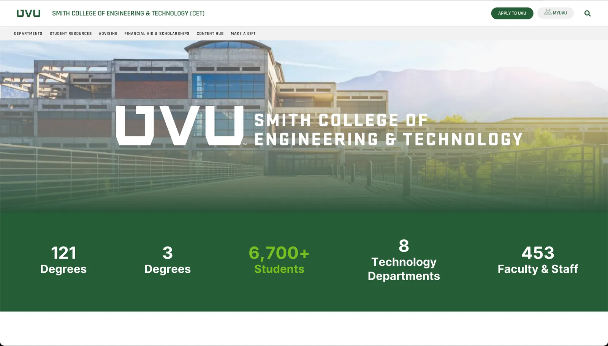
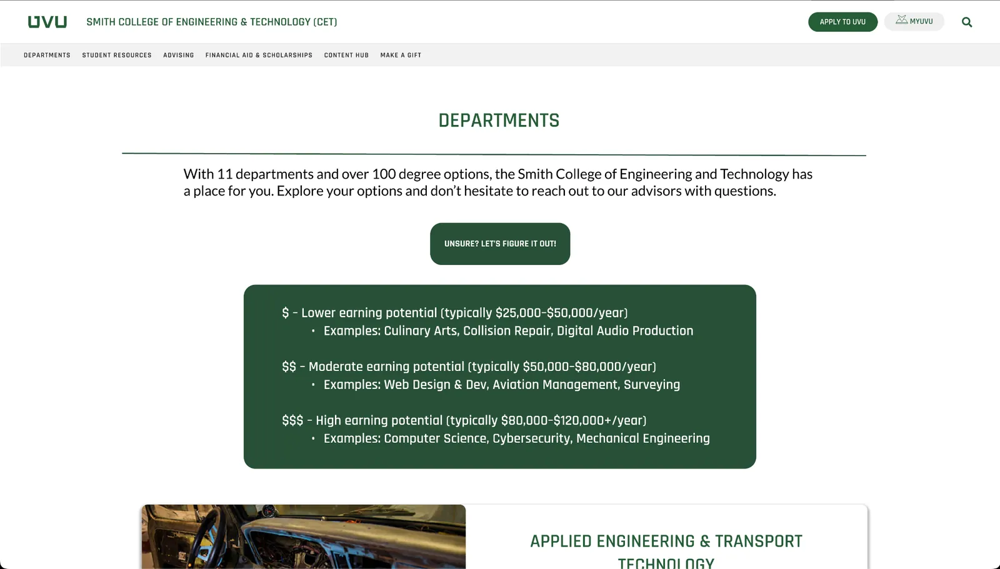

UVU CET website redesign
Introduction
I took Interaction Design from Dan Hatch in Spring 2025. The way he taught the class was for us to gradually work through the process of designing a website. He picked a redesign of the UVU CET website, and we went through iterations of the site throughout the semester, based on the coursework we were learning.
What happened
Over the course of the semester we went through each phase of ideation and execution on the revamped UVU CET website. We did this at a 2000 level, so there was no actual coding on the site; it was all done in Figma.
The first stage was sketching, where we went through different ideas and sketches for the site.
After that came the low-fidelity wireframing stage, where we designed the new pages of the site (for many of us, for the first time). We made sure to stick to a set of guidelines Dan had given us: he said not to stray too far from UVU branding when looking for new designs. We had to find a balance between UVU branding and new, fluid design.
Next was the high-fidelity wireframing stage, where we furthered our designs and perfected our ideas. After that was the prototyping stage, where we connected the elements and pages together in Figma so the design looked and behaved much more like an actual website.

After prototyping came user testing. We had friends and family do eye-tracking tests to see if our changes to the site had been beneficial, and tracked where their eyes went first when they were given a set of things to accomplish in our makeshift site. We found a lot of valuable information in these tests, and we were able to change the site even more to fit the user experience.
After that we refined the site further, went through another round of user testing and more refining, and then presented our final products at the end of the semester.

Conclusion
I learned a lot from this class's coursework, and I'm glad I had the opportunity to learn in this environment and through the design process it taught. I learned about the different iterations that come from learning more about the user's needs. I learned that it's important to balance function and design, and to make sure we have the best of both.